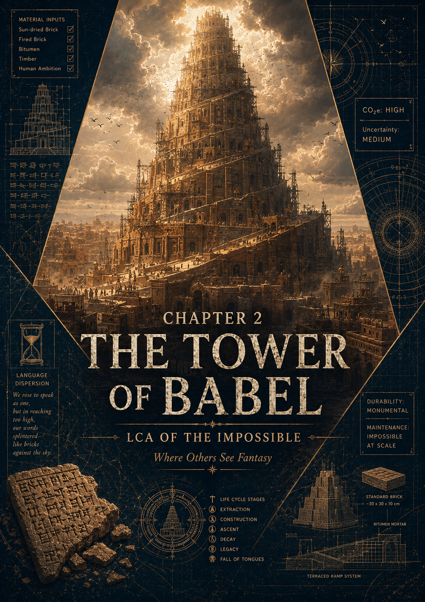

EPISODE #36 · MYTH & LEGENDS
The Tower of Babel
What would it take — in carbon — to build a tower meant to reach the heavens?
THE SUBJECT
Architecture against the sky.
The Tower of Babel is reconstructed as a completed 90 m form of Etemenanki, Babylon's great seven-stage ziggurat. The inventory combines a sun-dried mudbrick core, a fired-brick facing with bitumen mortar, imported timber, minor metal fittings, transport, construction fires and one year of maintenance and ceremonial operation.
Functional unit
Provision and operation of one completed 90 m Tower of Babel for one year, including full construction, one year of maintenance and auxiliary fires.
Main hotspot
The fired-brick facing is the dominant hotspot, contributing about 95.4% of the complete one-year result.
DEFRA coverage
The main result is almost entirely DEFRA-grounded: about 99.8% of the total uses DEFRA 2026 factors or direct proxies.
Sensitivity
When construction is spread across a 100-year service life, the result falls to about 262 t CO₂e per year.
Engineering reconstruction
90 × 90 m square base, 90 m height, seven stages, 448,728 m³ total masonry and 15,000 m³ of monumental stairs.
Separate disclosures
Biogenic CO₂ is disclosed separately at 746,840 kg CO₂. The episode excludes supernatural intervention unless a physical flow can be reconstructed.
Key interpretation
The tower is not defined by clay but by fire: the sun-dried core holds most of the mass, while the kiln-fired outer skin carries almost all of the climate burden.
Download
THE VERDICT
They tried to give one language to the sky.
The kilns answered first.
The words were scattered.
The carbon stayed.